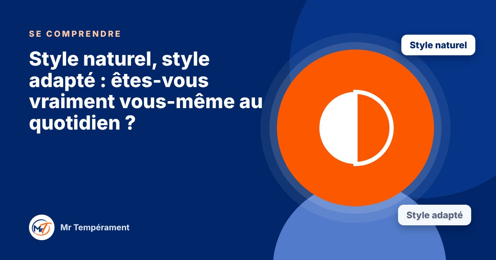

Style naturel, style adapté : êtes-vous vraiment vous-même au quotidien ?

Ce que vous êtes au naturel et ce que vous montrez aux autres ne sont pas toujours identiques.
Vous êtes plutôt réservé(e), mais vous animez très bien une réunion. Vous aimez prendre votre temps, mais votre travail vous demande d'aller vite. Vous êtes calme, mais vous haussez le ton à la maison. Est-ce vous, ou est-ce un rôle ?
Deux visages, tous deux vrais
Votre style naturel est votre manière spontanée de fonctionner quand vous êtes détendu(e), chez vous, sans pression. Votre style adapté est celui que vous mobilisez pour répondre aux attentes de votre environnement : travail, famille, vie sociale.
L'adaptation n'est pas de l'hypocrisie. C'est une intelligence relationnelle : vous ajustez votre manière d'être à la situation. Les deux styles sont vrais. Ils racontent seulement deux choses différentes.
Quand l'écart devient fatigant
Plus l'écart entre les deux styles est grand, plus l'adaptation coûte de l'énergie. Une personne naturellement calme et réfléchie qui doit être toute la journée dynamique et rapide finit souvent épuisée, sans comprendre pourquoi. Elle fonctionne bien, mais au prix d'un effort que personne ne voit.
Reconnaître cet écart, c'est déjà commencer à le gérer : choisir où l'effort vaut la peine, et où vous pouvez revenir à vous-même.
Que faire de cette découverte ?
Vous n'avez pas à choisir entre les deux. Il s'agit de savoir lequel vous utilisez, quand, et ce que cela vous coûte. Trois questions simples : dans quelles situations vous sentez-vous le plus vous-même ? Où vous adaptez-vous au prix d'un gros effort ? Que pourriez-vous alléger ?
Pour aller plus loin
Le Bilan DISC Miroir mesure vos deux styles, le naturel et l'adapté, et met en lumière l'écart entre les deux, avec votre super-pouvoir, votre point faible et votre premier mois.
Découvrir le Bilan DISC MiroirFaire le test gratuit